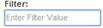

| Click on the sign to the left of an entry to expand a contact and see additional details, such as fax number, Credit Manager, Eclipse #, PO Box and on-site contact. | ||
| Click on any heading to sort by that field. | ||
| Click on an address to map it on google maps. | ||
| Tap a phone number to dial it from your smartphone. | ||
| Use the Directory Listings dropdown for a specified list of just Profit Centers, Region Managers or Service Center Employees. | ||
| Use the Filter field to efficiently find a specific person, group, profit center or even a District Credit Manager’s PC assignments. |  | |
| Click on the export icon on the far right to export your results to an Excel file. | ||